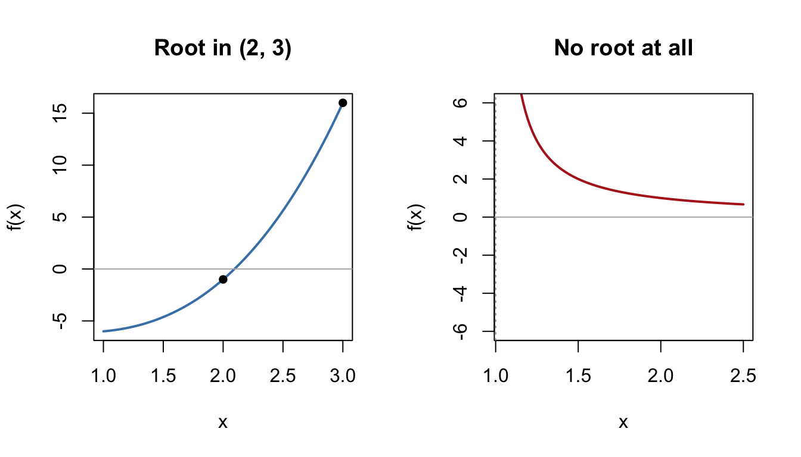

9 Numerical Methods
Chapters 2–8 solved equations and integrals exactly. But exactness has limits: mix an exponential with a polynomial (\(e^x = 3x\)), or ask for the interest rate hiding inside a stream of cash flows, and no formula will save you. Numerical methods trade exact answers for arbitrarily good approximations — and since real business data is itself approximate, that trade is usually a bargain.
This chapter covers the A-level toolkit: locating roots by sign changes, refining them by iteration and by the Newton–Raphson method, approximating integrals with the trapezium rule — and, throughout, knowing when each method can fail.
Why this matters: Every time Excel's Goal Seek, Solver or IRR function returns an answer, one of this chapter's algorithms (or a close cousin) has just run. Numerical root-finding, iteration and quadrature sit inside every piece of financial, forecasting and optimisation software you will ever use. Understanding them means knowing when to trust the software — and when it's quietly failing.
9.1 Locating roots by sign change
9.1.1 Key idea
If \(f\) is continuous on \([a, b]\) and \(f(a)\) and \(f(b)\) have opposite signs, then \(f(x) = 0\) has at least one root between \(a\) and \(b\) — the curve can't get from below the axis to above it without crossing. Repeatedly halving or narrowing the interval traps the root as tightly as you like.
Two ways the logic can fail, both worth knowing cold:
- No sign change ≠ no root. A curve can touch the axis (a repeated root, like \((x-2)^2\)) without crossing, and an interval can contain an even number of roots whose sign changes cancel.
- Sign change ≠ root, if \(f\) isn't continuous. \(f(x) = \dfrac{1}{x - 1}\) satisfies \(f(0) < 0 < f(2)\), but there is no root — the "crossing" is a vertical asymptote.

Figure 9.1: A sign change traps a root (left); a sign change across an asymptote traps nothing (right).
9.1.2 Worked examples
Example (simple). Show that \(x^3 - 2x - 5 = 0\) has a root between 2 and 3.
\(f(2) = 8 - 4 - 5 = -1 < 0\) and \(f(3) = 27 - 6 - 5 = 16 > 0\). \(f\) is a polynomial (continuous everywhere), so a root lies in \((2, 3)\).
Example (moderate). Locate that root to 1 decimal place.
Narrow the interval: \(f(2.1) = 9.261 - 4.2 - 5 = 0.061 > 0\), so the root is in \((2, 2.1)\). Deciding the first decimal needs the midpoint: \(f(2.05) = 8.615 - 4.1 - 5 = -0.485 < 0\), so the root is in \((2.05, 2.1)\) — closer to 2.1 than to 2.0. Root \(= 2.1\) (1 d.p.).
Note the technique for "to \(n\) decimal places": show a sign change across an interval that pins down the rounding, typically by testing the halfway point.
Example (challenging — locating break-even points). A firm's profit is \(P(q) = 60\sqrt{q} - 100 - 4q\) (revenue grows with diminishing returns; costs are fixed-plus-linear). Show that the firm has a break-even point between \(q = 3\) and \(q = 4\), and another between \(q = 150\) and \(q = 200\).
\(P(3) = 60\sqrt{3} - 112 \approx 103.9 - 112 = -8.1 < 0\); \(P(4) = 120 - 116 = 4 > 0\): a break-even in \((3, 4)\).
\(P(150) = 60\sqrt{150} - 700 \approx 734.8 - 700 = 34.8 > 0\); \(P(200) \approx 848.5 - 900 = -51.5 < 0\): another in \((150, 200)\).
So the firm is profitable only for outputs between roughly 4 and 170 — too small and fixed costs dominate; too large and the linear costs outrun the diminishing-returns revenue. (This particular equation can be checked exactly with a substitution \(u = \sqrt{q}\), turning it into a quadratic — we'll do that in Section 9.2. In genuinely mixed equations, no such rescue exists and the sign-change method is your starting point.)
9.1.3 Practice exercises
- Show that \(x^3 + x - 7 = 0\) has a root between 1 and 2, and locate it to 1 decimal place.
- \(f(x) = (x - 2)^2\) has a root at \(x = 2\), yet \(f(1)\) and \(f(3)\) are both positive. Explain why the sign-change method misses it.
- \(f(x) = \dfrac{1}{x - 1}\) has \(f(0) = -1\) and \(f(2) = 1\). Explain why there is no root in \((0, 2)\) despite the sign change.
Common mistakes:
- Concluding "root = 2.1 to 1 d.p." from a sign change over \((2, 2.1)\) alone — that interval contains numbers rounding to 2.0 and to 2.1. Test the midpoint.
- Forgetting the continuity requirement — always ask whether the function has any asymptotes or jumps in the interval.
- Assuming the interval contains only one root. Sketch first (Chapter 3); a cubic can cross three times.
Self-check: locating roots by sign change
Q1. Let \(f(x) = x^3 + 2x - 9\). Compute \(f(1) =\) and \(f(2) =\) . Since \(f\) is continuous, the sign change guarantees .
Q2. A continuous function has \(f(2.3) = -0.21\), \(f(2.35) = 0.14\) and \(f(2.4) = 0.52\). To 1 decimal place, the root is .
Q3. \(g(x) = (x - 3)^2\) satisfies \(g(2) = 1 > 0\) and \(g(4) = 1 > 0\): no sign change on \((2, 4)\). Which statement is correct?
- \(g\) has no root in \((2, 4)\).
- \(g\) has a root in \((2, 4)\) that the test cannot detect, because the curve touches the axis without crossing it.
- \(g\) must be discontinuous somewhere in \((2, 4)\).
- \(g\) has two distinct roots in \((2, 4)\) whose sign changes cancel.
Answer:
Q4. \(h(x) = \dfrac{1}{x - 2}\) has \(h(1) = -1 < 0\) and \(h(3) = 1 > 0\), yet \(h(x) = 0\) has no solution. The sign-change conclusion fails here because .
Q5. A firm's profit is \(P(q) = 50\sqrt{q} - 80 - 2q\). Compute \(P(1) =\) and \(P(4) =\) . The sign-change test guarantees a break-even output in the interval .
Q1. \(f(1) = 1 + 2 - 9 = -6\) and \(f(2) = 8 + 4 - 9 = 3\). The conclusion is at least one root: a sign change can never count crossings, and a cubic can cross three times — "exactly one" claims more than the test delivers.
Q2. \(2.3\). Since \(f(2.35) > 0\), the root sits in \((2.3, 2.35)\), and every number there rounds to \(2.3\). The trap is stopping at the first bracket \((2.3, 2.4)\): that interval contains numbers rounding to \(2.3\) and to \(2.4\), which is exactly why the midpoint test exists.
Q3. (B). The curve touches the axis at the repeated root \(x = 3\) without crossing, so \(g\) has the same sign on both sides — nothing for the test to detect. (A) is the tempting trap: "no sign change" never means "no root".
Q4. \(h\) is not continuous on the interval — the sign change happens across the vertical asymptote at \(x = 2\), not across a root. Continuity is a working part of the test, not small print.
Q5. \(P(1) = 50 - 80 - 2 = -32\) and \(P(4) = 100 - 80 - 8 = 12\), so a break-even lies in \((1, 4)\): \(P\) is continuous there and changes sign. Quick sense check: \(P(4) > 0\) says the firm is already profitable at \(q = 4\), so it must have broken even at some smaller output.
9.2 Fixed-point iteration
9.2.1 Key idea
Rearrange \(f(x) = 0\) into the form \(x = g(x)\), pick a starting value \(x_0\), and iterate:
\[x_{n+1} = g(x_n).\]
If the sequence settles down, it settles on a fixed point of \(g\) — a value the rule doesn't move (Section 5.1) — which is a root of the original equation. Whether it settles depends on the steepness of \(g\) near the root:
\[|g'(x)| < 1 \text{ near the root} \;\Rightarrow\; \text{convergence}; \qquad |g'(x)| > 1 \;\Rightarrow\; \text{divergence}.\]
The same equation has many rearrangements; some converge and some don't. If one fails, try another.
9.2.2 Worked examples
Example (simple). Show that \(x^3 - 2x - 5 = 0\) can be rearranged as \(x = (2x + 5)^{1/3}\), and iterate from \(x_0 = 2\).
Rearranging: \(x^3 = 2x + 5\), so \(x = (2x+5)^{1/3}\). Iterating \(x_{n+1} = (2x_n + 5)^{1/3}\):
\[x_1 = 9^{1/3} = 2.0801, \quad x_2 = 2.0924, \quad x_3 = 2.0942, \quad x_4 = 2.0945.\]
The iterates are settling: root \(\approx 2.0946\) (4 d.p.) — consistent with the interval \((2, 2.1)\) found in Section 9.1.
Example (moderate — a rearrangement that fails). The same equation also rearranges to \(x = \dfrac{x^3 - 5}{2}\). Iterate from \(x_0 = 2\) and explain what happens.
\[x_1 = \frac{8 - 5}{2} = 1.5, \qquad x_2 = \frac{3.375 - 5}{2} = -0.81, \qquad x_3 = \frac{-0.54 - 5}{2} = -2.77, \dots\]
The iterates flee the root. Diagnosis: here \(g(x) = \tfrac{x^3 - 5}{2}\) has \(g'(x) = \tfrac{3x^2}{2}\), which at the root (\(x \approx 2.09\)) is about \(6.6\) — far bigger than 1. Each step amplifies the error instead of shrinking it. Same equation, different rearrangement, opposite behaviour: the convergence condition is not a footnote.
Example (challenging — iterating to a break-even point). Return to \(P(q) = 60\sqrt{q} - 100 - 4q\) from Section 9.1. Rearranging \(P(q) = 0\) gives \(q = 15\sqrt{q} - 25\). Iterate from \(q_0 = 150\), explain which break-even point the scheme finds, and verify exactly.
Iterating \(q_{n+1} = 15\sqrt{q_n} - 25\):
\[q_1 = 15\sqrt{150} - 25 = 158.7, \quad q_2 = 164.0, \quad q_3 = 167.1, \quad q_4 = 168.9, \dots \to \approx 171.4.\]
Here \(g(q) = 15\sqrt{q} - 25\) has \(g'(q) = \dfrac{7.5}{\sqrt{q}}\). At the large root (\(q \approx 171\)): \(g' \approx 0.57 < 1\) — converges. At the small root (\(q \approx 3.6\)): \(g' \approx 3.9 > 1\) — this scheme can never find the small break-even, from any nearby start.
Verification (the promised exact check): substitute \(u = \sqrt{q}\) into \(P = 0\): \(4u^2 - 60u + 100 = 0\), i.e. \(u^2 - 15u + 25 = 0\), so \(u = \tfrac{15 \pm \sqrt{125}}{2}\), giving \(q = u^2 \approx 3.65\) or \(171.35\). The iteration was heading exactly where the algebra says it should. When an exact check exists, take it — it's how you learn to trust (and distrust) your numerical schemes.
9.2.3 Practice exercises
- Rearrange \(x^3 - 2x - 5 = 0\) as \(x = (2x+5)^{1/3}\) and compute \(x_1, x_2, x_3\) from \(x_0 = 2\), to 4 d.p.
- The iteration \(x_{n+1} = \dfrac{x_n^2 + 6}{5}\) solves \(x^2 - 5x + 6 = 0\) (roots 2 and 3). Starting from \(x_0 = 1\), compute three iterates and state which root the scheme is approaching. Using \(g'(x) = \tfrac{2x}{5}\), explain why it can approach that root but not the other.
- Explain, using \(g'\), why \(x_{n+1} = \dfrac{x_n^3 - 5}{2}\) diverges from the root of \(x^3 - 2x - 5 = 0\) near \(2.09\).
Common mistakes:
- Blaming the equation when the rearrangement diverges. Try a different \(g\).
- Reporting an unconverged iterate as "the root". Iterate until successive values agree to the accuracy required — and then confirm with a sign change around your answer.
- Forgetting that iteration finds a fixed point, not necessarily the one you wanted (as the break-even example shows) — bracket your target root first.
9.3 The Newton–Raphson method
9.3.1 Key idea
Newton–Raphson turbo-charges root-finding using Chapter 7's tangent lines. From an estimate \(x_n\), slide down the tangent at \(\big(x_n, f(x_n)\big)\) to where it hits the axis; that landing point is the next estimate:
\[x_{n+1} = x_n - \frac{f(x_n)}{f'(x_n)}.\]
When it works, it works spectacularly — the number of correct decimal places roughly doubles each step. But the tangent can betray you:
- if \(f'(x_n) = 0\) (a stationary point), the tangent is horizontal and never meets the axis — the formula divides by zero;
- if \(f'(x_n)\) is merely small, the tangent is nearly flat and fires the next estimate far away, possibly towards a different root or off to nowhere.
Good practice: bracket the root with a sign change first, then start Newton–Raphson from inside the bracket, away from any turning points.
9.3.2 Worked examples
Example (simple). Apply Newton–Raphson to \(f(x) = x^3 - 2x - 5\) from \(x_0 = 2\).
\(f'(x) = 3x^2 - 2\). Step 1: \(f(2) = -1\), \(f'(2) = 10\):
\[x_1 = 2 - \frac{-1}{10} = 2.1.\]
Step 2: \(f(2.1) = 0.061\), \(f'(2.1) = 11.23\):
\[x_2 = 2.1 - \frac{0.061}{11.23} = 2.09457.\]
Step 3 gives \(x_3 = 2.094551\ldots\) — six correct decimals after three steps. Compare the fixed-point scheme of Section 9.2, still on four decimals after four steps: this is the "doubling of accuracy" in action.
Example (moderate — a mixed equation with no exact solution). Solve \(e^x = 3x\) for the smaller root, to 3 d.p.
Set \(f(x) = e^x - 3x\): \(f(0) = 1 > 0\), \(f(1) = e - 3 \approx -0.28 < 0\) — a root in \((0, 1)\), and no algebraic technique in this course (or any other) solves it exactly. Newton–Raphson with \(f'(x) = e^x - 3\), from \(x_0 = 0.5\):
\[x_1 = 0.5 - \frac{0.1487}{-1.3513} = 0.610, \qquad x_2 = 0.610 - \frac{0.0104}{-1.1596} = 0.619,\]
and \(x_3\) agrees: root \(\approx 0.619\). (Sanity check: \(e^{0.619} \approx 1.857 \approx 3 \times 0.619\) ✓.)
Example (moderate — watching it fail). Apply one Newton–Raphson step to \(f(x) = x^3 - 2x - 5\) from the unwise starting point \(x_0 = 0.8\).
\(f(0.8) = -6.088\) and \(f'(0.8) = 3(0.64) - 2 = -0.08\) — a nearly flat tangent. The step:
\[x_1 = 0.8 - \frac{-6.088}{-0.08} = 0.8 - 76.1 = -75.3.\]
One step, and the estimate has been launched seventy-six units in the wrong direction (\(x_0 = 0.8\) sits close to the turning point at \(x = \sqrt{2/3} \approx 0.816\)). The method didn't warn us; the bracketing habit — start inside a sign-change interval near the root — is what prevents this.
Example (challenging — the internal rate of return). A project costs £1,000 today and returns £600 at the end of each of the next two years. Its internal rate of return (IRR) is the discount rate \(r\) making the net present value zero:
\[\text{NPV}(r) = -1000 + \frac{600}{1+r} + \frac{600}{(1+r)^2} = 0.\]
Show the IRR lies between 10% and 15%. (b) Perform one Newton–Raphson step from \(r_0 = 0.12\). (c) Verify the answer exactly.
\(\text{NPV}(0.10) = -1000 + 545.45 + 495.87 = +41.32\); \(\text{NPV}(0.15) = -1000 + 521.74 + 453.69 = -24.57\). Sign change: IRR \(\in (0.10, 0.15)\).
Differentiating, \(\text{NPV}'(r) = -\dfrac{600}{(1+r)^2} - \dfrac{1200}{(1+r)^3}\). At \(r_0 = 0.12\): \(\text{NPV} = 14.03\) and \(\text{NPV}' = -1332.5\), so
\[r_1 = 0.12 - \frac{14.03}{-1332.5} = 0.1305.\]
A second step gives \(r_2 \approx 0.1307\): the IRR is 13.07%.
- With only two cash flows, the exact check is available: multiply through by \((1+r)^2\) and set \(x = 1 + r\): \(1000x^2 - 600x - 600 = 0\), so \(x = \tfrac{600 + \sqrt{2,760,000}}{2000} = 1.13066\), i.e. \(r = 13.07\%\) ✓.
Here is the punchline: with three or more years of cash flows, the polynomial is cubic, quartic, quintic… and beyond degree 4 no formula exists, even in principle. Every IRR ever computed for a realistic project — including by Excel's IRR function — comes from an iteration like the one you just performed by hand.
9.3.3 Practice exercises
- Use two Newton–Raphson steps on \(f(x) = x^2 - 7\) from \(x_0 = 2.5\) to approximate \(\sqrt{7}\), to 4 d.p.
- Show that \(e^x = 4x\) has a root between \(0.3\) and \(0.4\), and perform one Newton–Raphson step from \(x_0 = 0.35\).
- Explain what goes wrong if Newton–Raphson is started exactly at a point where \(f'(x_0) = 0\), and why starting near such a point is almost as bad.
- A project costs £800 now and returns £500 in year 1 and £400 in year 2. Show its IRR lies between 5% and 10%, and perform one Newton–Raphson step from \(r_0 = 0.08\).
Common mistakes:
- Sign slips in \(x_{n+1} = x_n - \tfrac{f}{f'}\): it's a subtraction, and both \(f\) and \(f'\) carry their own signs. Write out each ingredient before combining.
- Differentiating wrongly and iterating confidently to the wrong answer — check \(f'\) before starting, and check the final root by substituting into \(f\).
- Stopping after one step because the number "looks right". Iterate until successive estimates agree to the required accuracy.
Why this matters: IRR is a standard investment-appraisal tool you will meet in your first finance module, and it is defined as the root of a polynomial that generally has no closed-form solution. Newton–Raphson (and safeguarded variants) is the engine inside the software. Knowing the engine also means knowing its failure modes — projects with sign-changing cash flows can have multiple IRRs, which is a sign-change subtlety straight out of Section 9.1.
9.4 Numerical integration: the trapezium rule
9.4.1 Key idea
When an integral can't be done exactly — or when you have data instead of a formula — approximate the area with trapezia. Split \([a, b]\) into \(n\) strips of width \(h = \tfrac{b - a}{n}\), with ordinates \(y_0, y_1, \dots, y_n\) at the strip edges:
\[\int_a^b y\,dx \;\approx\; \frac{h}{2}\Big[y_0 + y_n + 2\big(y_1 + y_2 + \dots + y_{n-1}\big)\Big].\]
("Ends once, middles twice.") Accuracy improves as \(n\) grows, and the direction of the error is readable from Chapter 7.7's concavity: the straight tops of the trapezia sit above a convex curve (overestimate) and below a concave one (underestimate).
9.4.2 Worked examples
Example (simple). Estimate \(\displaystyle\int_0^1 x^2\,dx\) using 4 strips, and compare with the exact value.
\(h = 0.25\); ordinates at \(0, 0.25, 0.5, 0.75, 1\): \(y = 0, 0.0625, 0.25, 0.5625, 1\).
\[T = \frac{0.25}{2}\Big[0 + 1 + 2(0.0625 + 0.25 + 0.5625)\Big] = 0.125 \times 2.75 = 0.34375.\]
Exact value: \(\tfrac13 = 0.3333\). The estimate is high — as predicted, since \(x^2\) is convex (\(f'' = 2 > 0\)).
Example (moderate). Estimate \(\displaystyle\int_1^3 \frac{1}{x}\,dx\) with 4 strips, compare with the exact value, and state (with reason) the direction of the error.
\(h = 0.5\); ordinates at \(1, 1.5, 2, 2.5, 3\): \(y = 1, 0.6667, 0.5, 0.4, 0.3333\).
\[T = \frac{0.5}{2}\Big[1 + 0.3333 + 2(0.6667 + 0.5 + 0.4)\Big] = 0.25 \times 4.4667 = 1.1167.\]
Exact: \(\ln 3 = 1.0986\). Overestimate, because \(y = \tfrac1x\) is convex on \([1,3]\) (\(y'' = \tfrac{2}{x^3} > 0\)). Doubling the strips to 8 gives \(1.1032\) — the error shrinks by roughly a factor of 4, a characteristic of the trapezium rule.
Example (challenging — integrating data, with no formula at all). A firm measures its sales rate (units per month) at two-month intervals:
| \(t\) (months) | 0 | 2 | 4 | 6 | 8 | 10 | 12 |
|---|---|---|---|---|---|---|---|
| rate | 120 | 150 | 180 | 160 | 130 | 90 | 60 |
Estimate the total units sold over the year.
Total sales \(= \displaystyle\int_0^{12} (\text{rate})\,dt\) (Section 8.4) — but there is no formula to antidifferentiate, only measurements. Trapezium rule with \(h = 2\):
\[T = \frac{2}{2}\Big[120 + 60 + 2(150 + 180 + 160 + 130 + 90)\Big] = 180 + 2 \times 710 = 1600 \text{ units}.\]
About 1,600 units for the year. This is the trapezium rule's day job in practice: sensor readings, monthly figures, sampled web traffic — real data arrives as a table, and "the integral of the data" means a rule like this one. (The honest caveat: the estimate assumes the rate moved roughly linearly between measurements; a spike between readings would be missed entirely. More frequent measurement is the cure.)
9.4.3 Practice exercises
- Estimate \(\displaystyle\int_0^2 (x^2 + 1)\,dx\) using 4 strips, compare with the exact value, and explain the direction of the error.
- Estimate \(\displaystyle\int_1^2 \ln x\,dx\) using 4 strips (4 d.p.), compare with the exact value \(2\ln 2 - 1\) from Section 8.6, and explain why the rule underestimates this time.
- A machine's output rate is measured hourly: \(t = 0, 1, 2, 3, 4\) hours give rates \(40, 52, 60, 58, 45\) units per hour. Estimate the total output over the four hours.
Common mistakes:
- Muddling strips and ordinates: \(n\) strips need \(n + 1\) ordinates. Four strips, five \(y\)-values.
- Doubling the end values or forgetting to double the middles — recite "ends once, middles twice".
- Using an \(h\) that doesn't match the data spacing, or applying the rule to unevenly spaced data without adjusting (the formula above assumes equal spacing).
- Claiming over/underestimation without a reason — the reason is concavity, and it's checkable via \(f''\) or a sketch.
Self-check: the trapezium rule
Q1. Applying the trapezium rule with 5 strips requires ordinates.
Q2. Estimate \(\displaystyle\int_0^2 x^2\,dx\) using 4 strips. \(T =\)
Q3. The exact value in Q2 is \(\tfrac{8}{3} \approx 2.667\), so the trapezium estimate is an , because on this interval the curve is .
Q4. A warehouse measures its dispatch rate (units per hour) every hour: \(t = 0, 1, 2, 3, 4\) give rates \(30, 44, 50, 46, 38\). Estimate the total number of units dispatched over the four hours: units.
Q5. With 4 strips of width \(h\) and ordinates \(y_0, y_1, y_2, y_3, y_4\), the trapezium rule is:
- \(h\big[y_0 + y_1 + y_2 + y_3 + y_4\big]\)
- \(\dfrac{h}{2}\big[2(y_0 + y_4) + y_1 + y_2 + y_3\big]\)
- \(\dfrac{h}{2}\big[y_0 + y_4 + 2(y_1 + y_2 + y_3)\big]\)
- \(\dfrac{h}{2}\big[y_0 + y_1 + y_2 + y_3 + y_4\big]\)
Answer:
Q1. \(6\): \(n\) strips have \(n + 1\) edges. Answering \(5\) is the classic strips/ordinates muddle — four fence panels need five posts.
Q2. \(h = 0.5\); ordinates \(0, 0.25, 1, 2.25, 4\). Then \(T = \dfrac{0.5}{2}\big[0 + 4 + 2(0.25 + 1 + 2.25)\big] = 0.25 \times 11 = 2.75\).
Q3. Overestimate, because \(x^2\) is convex (\(f'' = 2 > 0\)): the straight trapezium tops sit above the curve. The check against the exact value confirms it: \(2.75 > 2.667\) ✓. Always give the reason via concavity — "it just is" earns no marks.
Q4. \(h = 1\): \(T = \dfrac{1}{2}\big[30 + 38 + 2(44 + 50 + 46)\big] = \dfrac{1}{2}\big[68 + 280\big] = 174\) units.
Q5. (C) — "ends once, middles twice". (B) is the mirror-image trap with ends doubled instead of middles; (D) forgets the doubling entirely; (A) drops the halving as well.
9.5 Choosing and trusting a numerical method
9.5.1 Key idea
The syllabus's final requirement is judgement: knowing when numerical methods are the right tool, which one to reach for, and how much to trust the output.
When: reach for numerical methods if (i) the equation mixes function types with no algebraic exit (\(e^x = 3x\), NPV polynomials of high degree), or (ii) you have data rather than formulae. Do not reach for them when an exact method exists — a quadratic deserves the quadratic formula, and a Chapter 8 integral deserves antidifferentiation.
Which: sign changes to locate and bracket; fixed-point iteration when a natural rearrangement converges; Newton–Raphson for speed when you can differentiate and start sensibly; trapezium rule for integrals of formulae-without-antiderivatives and for data.
Trust: a numerical answer earns trust by verification —
- it sits inside a confirmed sign-change bracket;
- substituting it back gives \(f(\text{root}) \approx 0\) (or the integral estimate is stable when you double the strips);
- successive iterates agree to the accuracy you're claiming.
9.5.2 Worked example
Example (putting it together). A start-up's cumulative profit satisfies \(P(q) = 200\ln(q + 1) - 30q + 50\), and management wants the output at which cumulative profit returns to zero. Plan the numerical attack.
Parse: \(\ln\) mixed with a linear term — no exact solution. Locate: \(P(10) = 200\ln 11 - 250 \approx 479.6 - 250 > 0\); \(P(20) = 200\ln 21 - 550 \approx 608.9 - 550 > 0\); \(P(30) = 200\ln 31 - 850 \approx 686.8 - 850 < 0\): bracket \((20, 30)\). Refine: Newton–Raphson with \(P'(q) = \tfrac{200}{q+1} - 30\), starting from \(q_0 = 25\) (safely inside the bracket; \(P'\) is comfortably negative there, no flat-tangent danger). Verify: final answer back into \(P\), and confirm it still lies in a tightened sign-change bracket. That four-step plan — parse, locate, refine, verify — is the whole discipline in one line.
9.5.3 Practice exercises
- For each task, name the appropriate method and justify briefly: (a) finding the IRR of a project with eight years of cash flows; (b) totalling a day's factory output from hourly sensor readings; (c) solving \(x^2 - 5x + 6 = 0\).
- State two checks you should perform before reporting a numerically found root to a client.
- A colleague's iteration produced \(x_{10} = 4.2071\) and \(x_{11} = 4.1808\). They report the root as "4.21 to 2 d.p.". What's wrong, and what should they do?
Common mistakes:
- Using a sledgehammer on a walnut: numerically "solving" equations that factorise in one line. Always try Chapter 2 first.
- Reporting unverified output. Software returns a number even when it has failed to converge; the checks above are your defence.
- Quoting more decimal places than the method (or the data feeding it) can justify.
Why this matters: In your degree, numerical methods stop being a topic and become the substrate: simulation, optimisation solvers, econometric estimation and machine-learning training are all iterative numerical schemes under the hood. The professional skills are exactly the ones practised here — bracket, iterate, verify, and stay alert to the failure modes.
9.6 Chapter summary
You should now be able to:
- locate roots with the sign-change test, and explain its two failure modes (repeated roots; discontinuities);
- rearrange equations into \(x = g(x)\), iterate, and use \(|g'|\) to explain convergence or divergence;
- apply Newton–Raphson from a sensible start, appreciate its speed, and recognise how flat tangents wreck it;
- approximate integrals of formulae and of raw data with the trapezium rule, predicting the direction of error from concavity;
- choose the right method for a task, and verify a numerical answer before trusting it.
One chapter remains: vectors — the language of multi-component quantities, and your on-ramp to the multivariable mathematics of university Management Science.
9.7 End of chapter quiz
Twelve questions covering the whole chapter — treat the result as a compass, not a verdict.
D1. Let \(f(x) = x^3 - 4x + 1\). Compute \(f(0) =\) and \(f(1) =\) . The sign-change test guarantees .
D2. \(g(x) = (x - 5)^2\) is positive at \(x = 4\) and at \(x = 6\). The sign-change method misses the root at \(x = 5\) because .
D3. \(h(x) = \dfrac{3}{x - 4}\) has \(h(3) = -3 < 0\) and \(h(5) = 3 > 0\). What can be concluded?
- There is at least one root in \((3, 5)\).
- There is exactly one root in \((3, 5)\).
- Nothing — \(h\) is not continuous on \((3, 5)\), so the sign-change test does not apply.
- There is a repeated root at \(x = 4\).
Answer:
D4. Rearranging \(x^3 - 3x - 2 = 0\) gives the iteration \(x_{n+1} = (3x_n + 2)^{1/3}\). Starting from \(x_0 = 1.5\), give the next two iterates to 3 decimal places: \(x_1 =\) and \(x_2 =\) . The iterates are approaching the root \(x =\) .
D5. An equation is rearranged as \(x = g(x)\) and iterated. Near the fixed point, the scheme converges precisely when:
- \(|g(x)| < 1\)
- \(|g'(x)| < 1\)
- \(g'(x) > 0\)
- \(|g'(x)| > 1\)
Answer:
D6. For one particular rearrangement, \(g'(x) \approx 2.4\) near the target root. Starting nearby, the iteration will .
D7. Apply one Newton–Raphson step to \(f(x) = x^2 - 10\) from \(x_0 = 3\). To 4 decimal places, \(x_1 =\)
D8. Newton–Raphson breaks down completely when the current estimate lands on a point where .
D9. A firm records its spending rate (£ per month) every three months: \(t = 0, 3, 6, 9, 12\) give rates \(200, 260, 300, 280, 220\). Use the trapezium rule to estimate total spending over the year: pounds.
D10. The curve \(y = e^x\) is convex, so a trapezium estimate of \(\displaystyle\int_0^1 e^x\,dx\) is .
D11. A project has seven years of cash flows and you need its IRR. The right plan is:
- apply the quadratic formula to the NPV equation
- apply the trapezium rule to the cash flows
- factorise the NPV polynomial exactly
- bracket the IRR with a sign change, then refine with Newton–Raphson
Answer:
D12. A colleague's successive iterates are \(5.3126\) and \(5.2871\), and they report the root as "5.31 to 2 d.p.". They should instead .
D1. \(f(0) = 1\) and \(f(1) = 1 - 4 + 1 = -2\); the guarantee is at least one root. A sign change never counts crossings — this cubic in fact has three real roots. Shaky? Revisit Section 9.1.
D2. The curve touches the axis at the repeated root \(x = 5\) without crossing, so \(g\) has the same sign on both sides. "No sign change" never means "no root". Shaky? Revisit Section 9.1.
D3. (C). The sign change happens across the vertical asymptote at \(x = 4\), and with continuity broken the test says nothing. (A) is what the test would deliver if \(h\) were continuous — which is exactly why the continuity check comes first. Shaky? Revisit Section 9.1.
D4. \(x_1 = 6.5^{1/3} = 1.866\) and \(x_2 = (3 \times 1.866 + 2)^{1/3} = 7.599^{1/3} = 1.966\), heading towards \(x = 2\). Verify exactly: \(2^3 - 3(2) - 2 = 0\) ✓. Shaky? Revisit Section 9.2.
D5. (B). Convergence is about the steepness of \(g\) near the fixed point: when \(|g'| < 1\), each step shrinks the error. (A) confuses the size of \(g\) with its gradient; (D) is the divergence condition. Shaky? Revisit Section 9.2.
D6. Diverge: with \(|g'| \approx 2.4 > 1\), each iteration multiplies the error by roughly \(2.4\). The fix is a different rearrangement, not a different equation. Shaky? Revisit Section 9.2.
D7. \(f(3) = -1\) and \(f'(3) = 6\), so \(x_1 = 3 - \dfrac{-1}{6} = 3.1667\). Sanity check: \(\sqrt{10} \approx 3.1623\), so one step already lands close. The tempting wrong answer \(2.8333\) comes from a sign slip — the formula subtracts \(f/f'\), and \(f\) is negative here. Shaky? Revisit Section 9.3.
D8. A horizontal tangent: if \(f'(x_n) = 0\) the formula divides by zero, and if \(f'\) is merely tiny, the step fires the estimate far from the root. ("The function is zero" is the goal, not a failure — that's the root itself.) Shaky? Revisit Section 9.3.
D9. \(h = 3\): \(T = \dfrac{3}{2}\big[200 + 220 + 2(260 + 300 + 280)\big] = 1.5 \times 2100 = 3150\). The likeliest slip is doubling the ends instead of the middles (giving \(2520\)) — "ends once, middles twice". Shaky? Revisit Section 9.4.
D10. An overestimate: on a convex curve the straight trapezium tops sit above the curve. Shaky? Revisit Section 9.4.
D11. (D). Seven years makes the NPV polynomial degree 7 — beyond degree 4 no exact formula exists even in principle, so (A) and (C) are non-starters, and (B) is an integration tool, not a root-finder. Bracket, then refine. Shaky? Revisit Section 9.5.
D12. Keep iterating: \(5.3126\) and \(5.2871\) still disagree in the first decimal place, so no 2 d.p. claim is possible yet. Agree to the accuracy first, then confirm with a sign-change bracket around the answer. Shaky? Revisit Section 9.5.
Rule of thumb: if two or three questions from the same section went wrong, rework that section before starting the next chapter — everything else can wait.
9.8 Answers to practice exercises
Sign change: 1. \(f(1) = -5 < 0\), \(f(2) = 3 > 0\) ✓; \(f(1.7) \approx -0.39 < 0\), \(f(1.8) \approx 0.63 > 0\), and \(f(1.75) \approx 0.11 > 0\), so the root lies in \((1.70, 1.75)\): root \(= 1.7\) (1 d.p.). 2. The curve touches the axis at the repeated root without crossing, so \(f\) has the same sign on both sides — no sign change to detect. 3. \(f\) is not continuous on \((0, 2)\): the sign change happens across the vertical asymptote at \(x = 1\), not across a root.
Fixed-point iteration: 1. \(x_1 = 2.0801\), \(x_2 = 2.0924\), \(x_3 = 2.0942\). 2. \(x_1 = 1.4\), \(x_2 = 1.592\), \(x_3 = 1.707\): approaching the root 2. Since \(g'(x) = \tfrac{2x}{5}\), \(|g'(2)| = 0.8 < 1\) (attracting) but \(|g'(3)| = 1.2 > 1\) (repelling): this scheme can converge to 2 but never to 3. 3. \(g'(x) = \tfrac{3x^2}{2} \approx 6.6\) at the root — each iteration multiplies the error by about 6.6, so the scheme diverges.
Newton–Raphson: 1. \(x_1 = 2.5 - \tfrac{-0.75}{5} = 2.65\); \(x_2 = 2.65 - \tfrac{0.0225}{5.3} = 2.6458\) (\(\sqrt{7} = 2.6458\) ✓). 2. \(f(0.3) \approx 0.150 > 0\), \(f(0.4) \approx -0.108 < 0\) ✓; from \(x_0 = 0.35\): \(f = 0.0191\), \(f' = -2.581\), so \(x_1 = 0.35 + \tfrac{0.0191}{2.581} = 0.3574\) (root \(\approx 0.357\)). 3. The tangent at a stationary point is horizontal and never meets the \(x\)-axis: the formula divides by zero. Near such a point, \(f'\) is tiny, so \(\tfrac{f}{f'}\) is huge and the next estimate lands far from the root. 4. \(\text{NPV}(0.05) = -800 + 476.19 + 362.81 = +39.00\); \(\text{NPV}(0.10) = -800 + 454.55 + 330.58 = -14.88\): IRR \(\in (5\%, 10\%)\). From \(r_0 = 0.08\): \(\text{NPV} = 5.90\), \(\text{NPV}' = -1063.7\), so \(r_1 = 0.08 + \tfrac{5.90}{1063.7} = 0.0855\), i.e. about \(8.55\%\) (exact IRR: \(8.56\%\)).
Trapezium rule: 1. \(h = 0.5\); ordinates \(1, 1.25, 2, 3.25, 5\): \(T = 0.25[6 + 2(6.5)] = 4.75\) vs exact \(\tfrac{14}{3} \approx 4.667\) — overestimate, since \(x^2 + 1\) is convex. 2. \(h = 0.25\); ordinates \(0, 0.2231, 0.4055, 0.5596, 0.6931\): \(T = 0.125[0.6931 + 2(1.1882)] = 0.3837\) vs exact \(2\ln 2 - 1 = 0.3863\) — underestimate, since \(\ln x\) is concave (the trapezium tops sit below the curve). 3. \(T = \tfrac{1}{2}[40 + 45 + 2(52 + 60 + 58)] = \tfrac{1}{2}[85 + 340] = 212.5\) units.
Choosing and trusting: 1. (a) Sign-change bracketing then Newton–Raphson (or iteration): the NPV polynomial has degree 8, so no exact formula exists. (b) Trapezium rule: data, not formulae. (c) Neither — factorise: \((x-2)(x-3) = 0\). Exact methods first. 2. E.g.: confirm the answer lies in a sign-change bracket, and substitute it back to check \(f(\text{root}) \approx 0\) (equivalently: check successive iterates agree to the claimed accuracy). 3. The iterates still differ in the first decimal place — the scheme hasn't converged to 2 d.p., so no 2 d.p. answer can be claimed. Keep iterating until successive values agree to 2 d.p. (and then verify with a sign change).